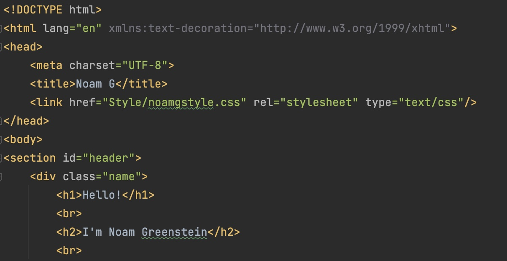
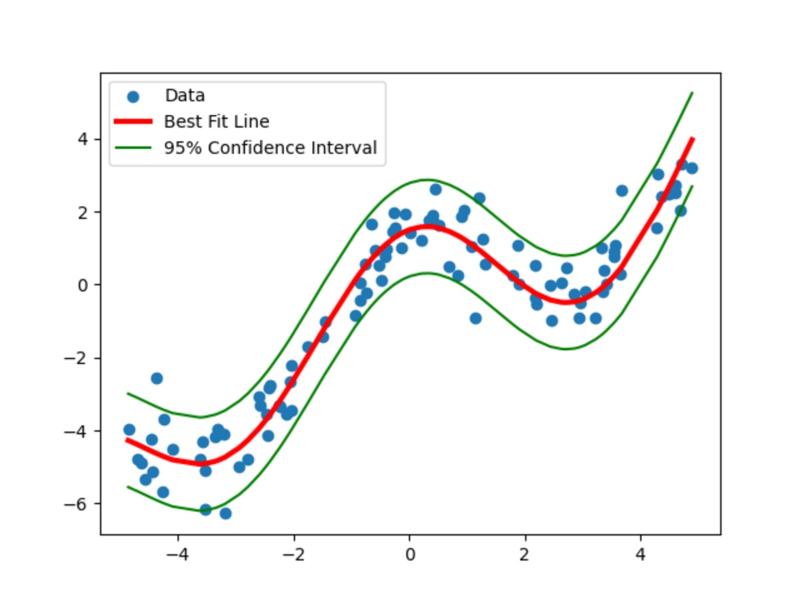

I'm currently a second year student at Northeastern.
I grew up playing soccer. I am an avid consumer of movies and music.
I enjoy watching sports (go Giants and Nets!),
hanging out with friends, and reading (currently reading "A Dance With Dragons").
Education Northeastern University
Major: Computer Science Minor: Math
Hover for Relevant Courses
MATH 1341: Calculus I MATH 1342: Calculus II MATH 2331: Linear Algebra
CY 2550: Intro to Cyber
CS 1800: Discrete Structures CS 2500: Fundies CS 2510; Fundies 2
CS 2810: Data Models CS 3000: Algo CS 3500: OOD
CS 3650: Systems
HTML/CSS to Design. FireBase for database. Docker to Host

Image Processor
JPanel API to edit Images
Least Squares
Machine Learning methods to plot Least Squares Regression line

My Goals
My goal is to get a co-op in the Artificial Intelligence/Machine Learning field.
I am interested in it's many applications to improve the world we live in
and would like to contribute
Work Experience
Teaching Assistant
- Fundamentals of Computer Science II - Host office hours to assist students with assignments - Grade assignments and help answer questions regarding grading
Peer Tutor
- Fundamentals of Computer Science I & Object Oriented Design - Work with students to help them better understand the class
and fix whatever issues they may be having
Intern
- Hill Flight Support - Interned for the CFO assisting in market research and remote projects
for manufacturing, locating, and selling rotary and fixed wingedmilitary aircraft parts. - Used Excel and PowerPoint to track data and make presentations
for the company and foreign militaries